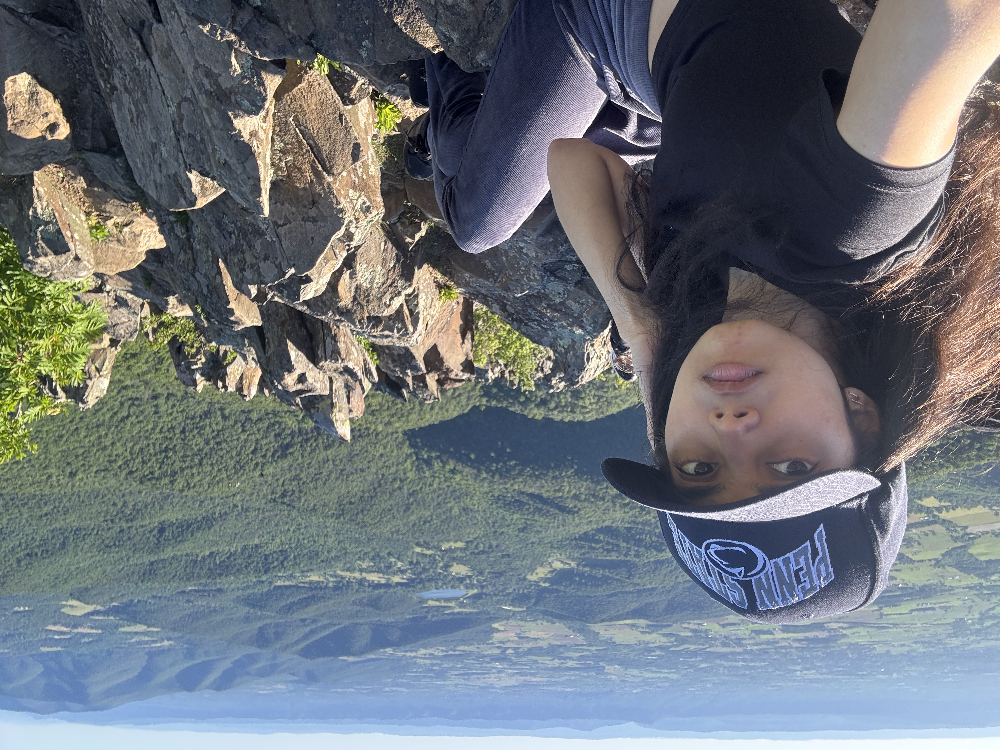
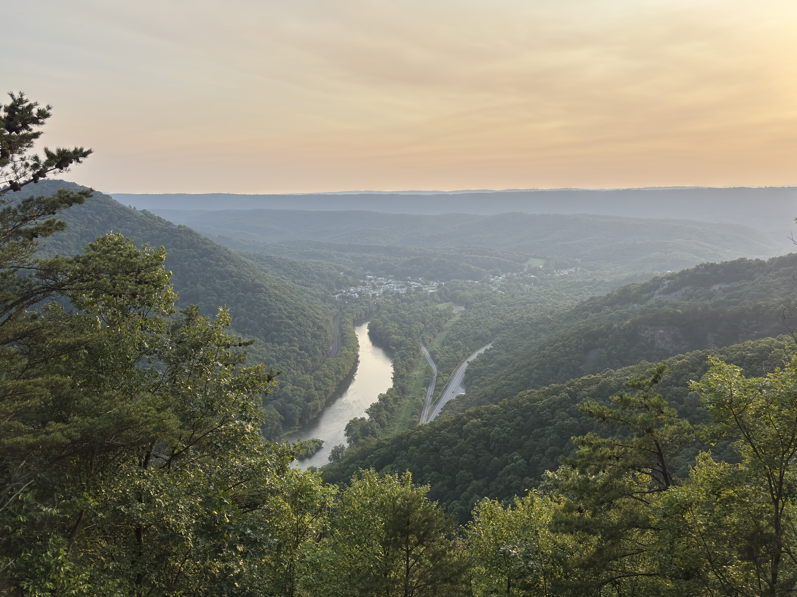
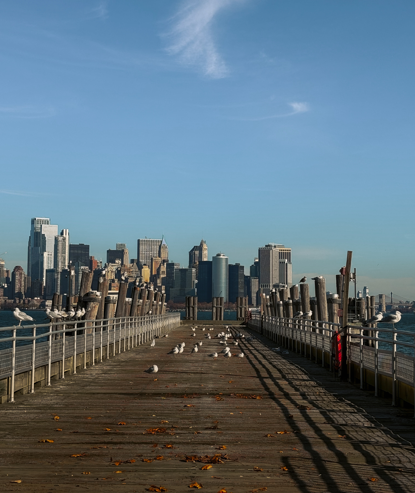
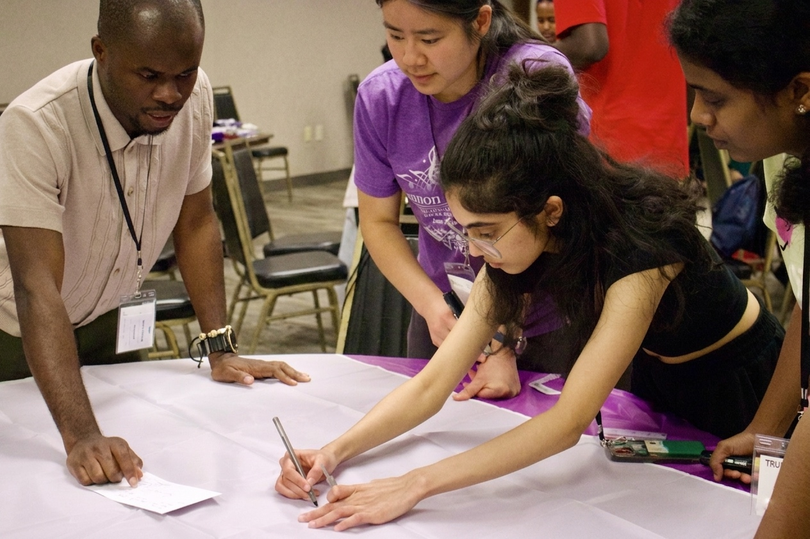
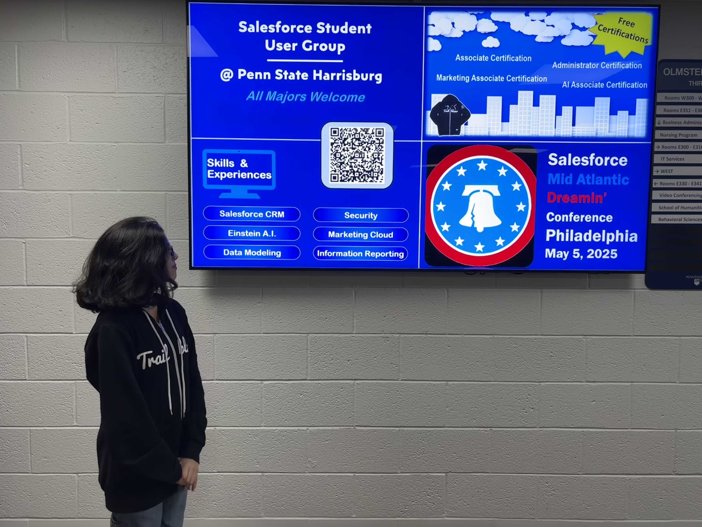

I ended up in data through research, which taught me to chase the story behind a number before I trust it. I think in pipelines: source → ingest → transform → serve → visualize. I like owning the full stack of it - building the schema, running the analysis, and figuring out what it actually means.
Outside of pipelines and schema design, you'll find me:
- deep in a film I have no real reason to be watching at 1 AM
- hunting a trail, a viewpoint, or just an excuse to be outside
- learning a language I'll use maybe twice a year
- obsessing over composition and light like it's a research project
The rabbit holes run deep and I don't always resurface on schedule. I've made peace with that.
01. Myself
02. Mountains


03. Photography

04. Community

